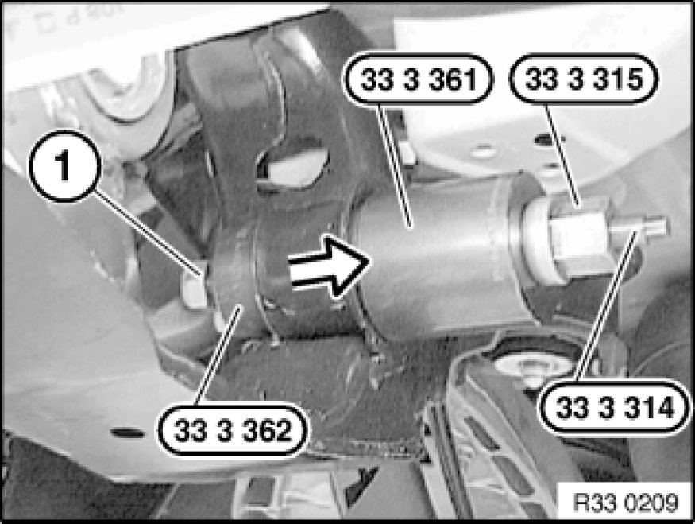
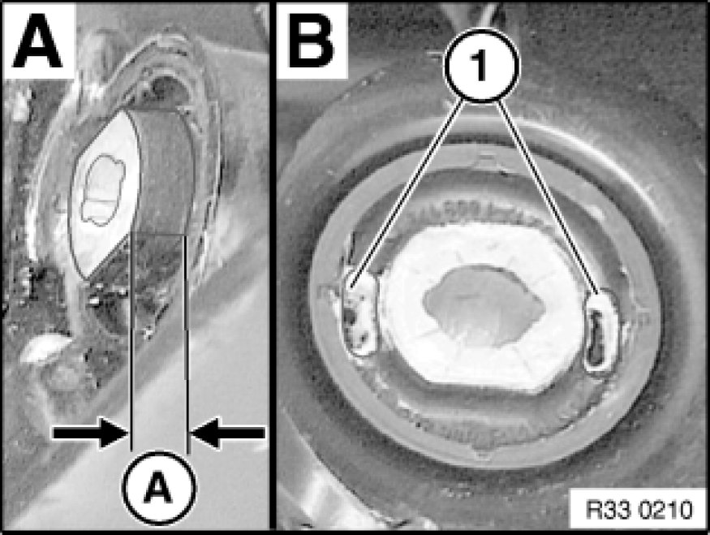
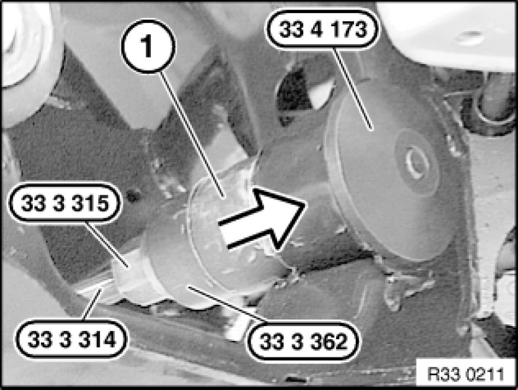

Replacing All Rubber Mounts for Differential Mounting At Front
33 17 004 - Replacing all rubber mounts for differential mounting at front

Special tools required:
- 33 3 314
- 33 3 315
- 33 3 361 33 3 360 Set of Tools
- 33 3 362 33 3 360 Set of Tools
- 33 4 173 33 4 170 Removal/Installation Thrust Pieces

Necessary preliminary tasks:
- Remove rear differential Removing and Installing/Replacing Rear Differential

Pull out rubber mount with special tools 33 3 314, 33 3 315, 33 3 361 33 3 360 Set of Tools, 33 3 362 33 3 360 Set of Tools and a standard nut (1) from rear axle carrier.

Important!
Observe installation position of rubber mount.
Fig. A = Protrusion (A) in direction of travel, rear
Fig. B = Openings (1) in transverse vehicle direction
Coat new rubber mount and bearing bush with Circo Light (refer to BMW Parts Service).

Draw in rubber mount (1) with special tools 33 3 314, 33 3 315, 33 3 362 33 3 360 Set of Tools and 33 4 173 33 4 170 Removal/Installation Thrust Pieces as far as it will go into rear axle carrier.